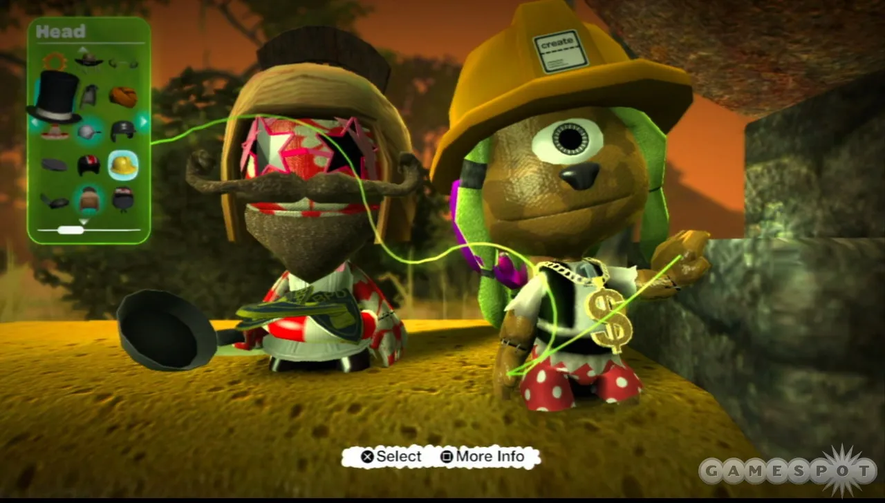
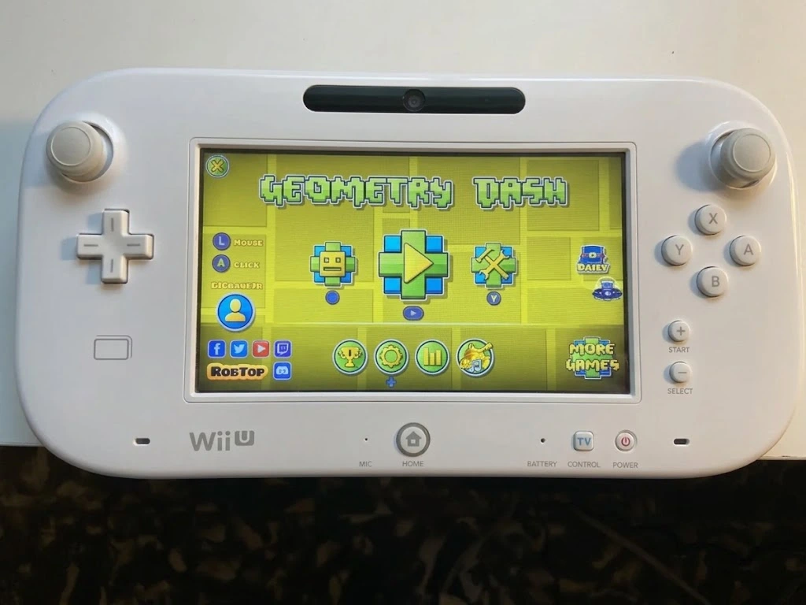
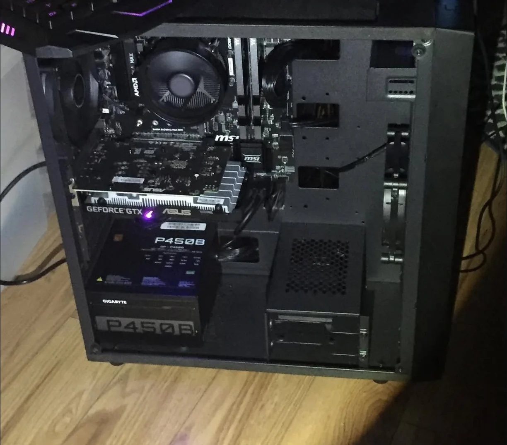
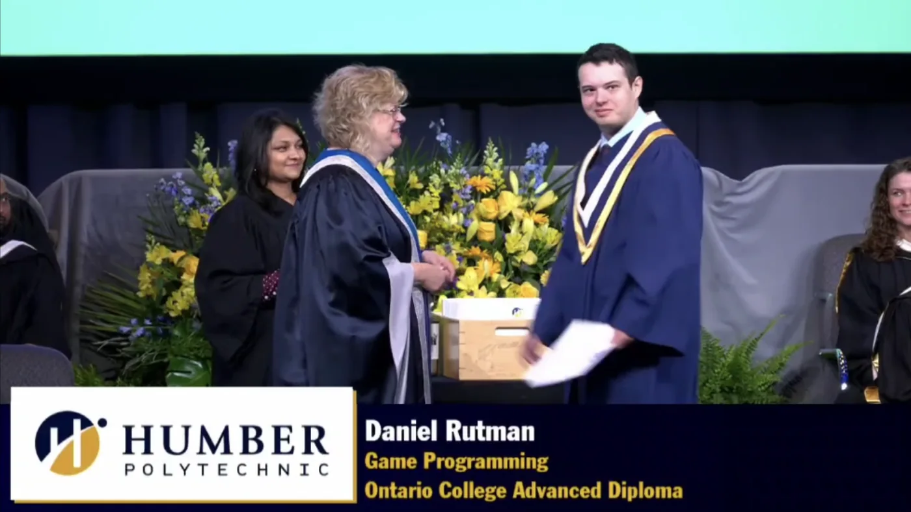
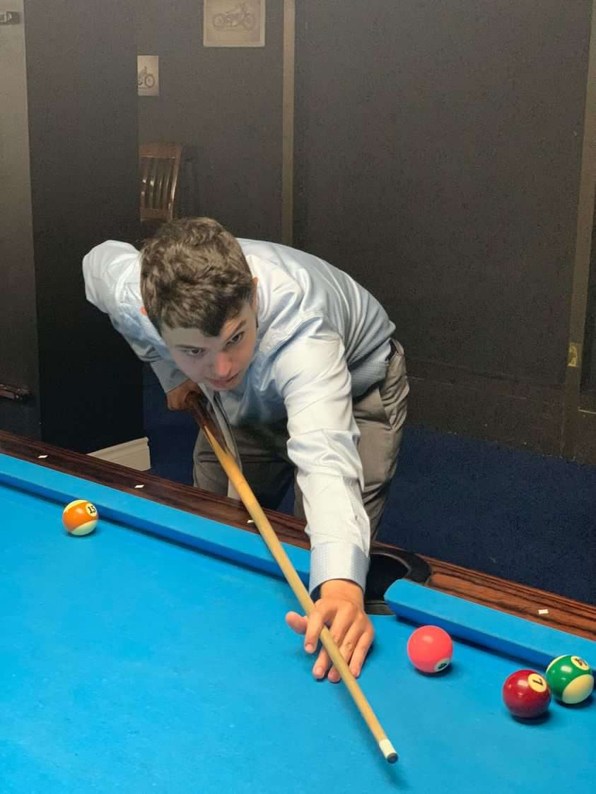

About Me

The Spark Early Gaming And Unforgettable Experiences
My love for video games started at a very young age with the GameCube and Mario Party 4. Growing up, my sister would let me play on her Nintendo DS and I would spend hours playing Super Mario, Phineas and Ferb:Across the 2nd Dimension and The Avengers. These games showed me the kind of game that is at its core, pure fun that everyone can get into.
From visiting a family friend's house and experiencing LittleBigPlanet for the first time, it was filled with charm, humour and had great challenges. But what stood out to me were the creativity and chaos of the user-made levels and co-op. Slapping each other, painting everywhere and exploring the fun levels that were made was something that made me realize how a game can offer a great shared experience with others.

Hardware Perspective And A Shift In Mindset
For Christmas, I got a Wii U which I considered one of the best consoles of all time for its variety of games. But when the Nintendo Switch released and was extremely successful, I realized a lot of those games were ones that had been on the commercial failure, the Wii U. This taught me a key lesson into the mindset of a game designer, which is that console's don't make games, games make consoles.
During this period of time, the same friend showed me Geometry Dash which fascinated me with its simple design and difficulty. Wanting to further learn about game design, I downloaded it on my dad's computer and started to become interested in the process of building my own levels. Looking at the work of others such as DanZMen was a great way to see how they make their games fun and apply the fundamental design basics; fair, lively and easy to pick up.

Bridging The Gap: Custom Hardware And Its Mechanics
My interests in computers started from my own PC that I built myself with parts I got from my dad. With the knowledge I learned, it wasn't long until I was getting asked to build computers for friends and family and I even started a small business on Facebook marketplace selling custom PCs.
Being able to understand computer's helped me have a greater understanding of working in game design as it allowed me to understand how a computer works and what can and can't be done with them.

Higher Education: Humber Polytechnic
As my high school journey came to a close I was eager to understand what my next step should be. Getting accepted into Humber Polytechnic's Game Programming program was an incredible opportunity. Completing the Game programming program at Humber is priceless as you are able to learn system architecture and design alongside talented peers while getting the knowledge from extremely knowledgeable professors.

My Vision And Philosophy
In this recent wave of game developers, it feels like there's a shift in what studios are going for. Where some are focusing too much on their monetization strategy and brand image, or even going too hard on the technical features over substance.
I want to be a part of the change that will bring quality games back to the industry; games that utilise their design to its fullest potential and optimize their code to be the most efficient on the hardware it runs on, rather than relying on frame generation or upscaling to falsely inflate the visuals.
Technology alone is not enough — it’s technology married with liberal arts, married with the humanities, that yields us the results that make our heart sing.
Steve Jobs